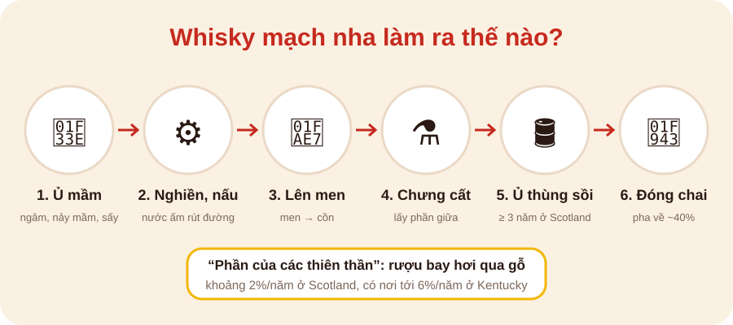

Rượu – bia
Whisky làm ra thế nào? Từ hạt lúa mạch đến "phần của các thiên thần"

Đọc đến phần làm whisky, em giật mình: giống nấu rượu gạo nhà mình đến bảy phần các bác ạ! Cũng ngâm hạt, cũng ủ men, cũng nấu cất. Chỉ khác ở đầu và ở cuối. Em kể theo từng bước như công thức nấu ăn cho dễ hình dung nhé.
1. Ủ mầm lúa mạch (làm mạch nha)
Lúa mạch được ngâm nước rồi trải ra sàn cho nảy mầm. Khi hạt nảy mầm, tinh bột trong hạt bắt đầu chuyển thành thứ dễ biến thành đường. Đến lúc vừa đủ thì đem sấy khô để dừng nảy mầm.
Có nơi ở Scotland sấy bằng lửa than bùn – khói than bùn ám vào hạt, sau này rượu có mùi khói rất đặc trưng. Giống như cá hun khói gác bếp vậy.
2. Nghiền và nấu ra nước đường
Mạch nha khô được nghiền thô, rồi trộn với nước ấm thành một thứ như cháo loãng (sách gọi là “mash”). Nước ấm rút hết đường trong hạt ra, lọc lấy phần nước ngọt.
3. Lên men
Nước đường cho vào thùng lớn, thêm men. Men ăn đường, sinh ra cồn – sau vài ngày được thứ nước giống bia không có hoa bia, khoảng 8% cồn.
4. Chưng cất
Nước lên men đem nấu cất trong những nồi đồng to (thường cất hai lần, có nơi ba lần). Rượu chảy ra trong veo như nước, gọi là “rượu non”. Người thợ chỉ lấy phần giữa ngon nhất, bỏ phần đầu và phần cuối – y như các cụ nấu rượu quê mình bỏ “rượu đầu” vậy.
5. Ủ trong thùng gỗ sồi
Đây mới là bước làm nên whisky. Rượu non cho vào thùng gỗ sồi, thường là thùng đã từng đựng bourbon hoặc rượu sherry, rồi để yên nhiều năm – whisky Scotland tối thiểu 3 năm.
Trong thùng, rượu ngấm vào gỗ rồi lại ra, lấy theo màu vàng hổ phách và những mùi vani, mật ong, trái cây khô, gia vị. Thùng từng đựng sherry cho mùi nho khô, hoa quả sẫm; thùng bourbon cho mùi vani, dừa.
“Phần của các thiên thần”
Gỗ có lỗ nhỏ li ti nên mỗi năm rượu trong thùng bay hơi mất một ít. Người Scotland gọi phần hao này là “angels’ share” – phần của các thiên thần. Sách ghi ở Scotland hao khoảng 2% mỗi năm, còn ở Kentucky (Mỹ) trời nóng hơn có thể tới 6% mỗi năm.
Em tính nhẩm: để 12 năm thì thùng rượu vơi đi gần một phần tư. Thảo nào rượu để lâu đắt thế 😜
6. Pha, lọc, đóng chai
Rượu ra thùng thường còn rất mạnh, được pha thêm nước cho về khoảng 40% rồi đóng chai. Loại để nguyên độ gọi là cask strength. Có nhà làm còn lọc lạnh cho rượu trong, không vẩn đục khi cho đá; có nhà không lọc để giữ nguyên mùi vị – trên nhãn sẽ ghi.
Em rút ra mấy điều
- Màu vàng là nhờ thùng gỗ, không phải tự nhiên mà có.
- Năm ủ càng nhiều không có nghĩa là ngon hơn – chỉ là khác đi, đậm gỗ hơn. Ngon hay không còn tùy miệng mỗi người.
- Từ hạt lúa đến ly rượu là cả chục năm chờ đợi – nên uống từ từ cho đáng, chứ “dô” một hơi thì phí công người ta lắm các bác ạ.
Bài sau: đọc nhãn chai whisky – để lần sau đi mua quà biếu không bị lóa mắt vì cái hộp đẹp 😂
Bài viết để tìm hiểu, không quảng cáo cho loại rượu hay thương hiệu nào. Uống để thưởng thức, đừng để say; đã uống rượu bia thì không lái xe; người dưới 18 tuổi không uống rượu bia.
Em tham khảo: The Pocket Guide To Whisky (tr. 15); Everything You Need to Know About Whisky (tr. 59 – angels' share); Whisky: Technology, Production and Marketing; The Handbook of Whisky (2012).
Kinh nghiệm và kiến thức bếp nhà, em viết lại theo cách hiểu của em – không thay lời khuyên của bác sĩ, chuyên gia dinh dưỡng. Thấy chỗ nào chưa đúng, các bác nhắn em sửa nhé.